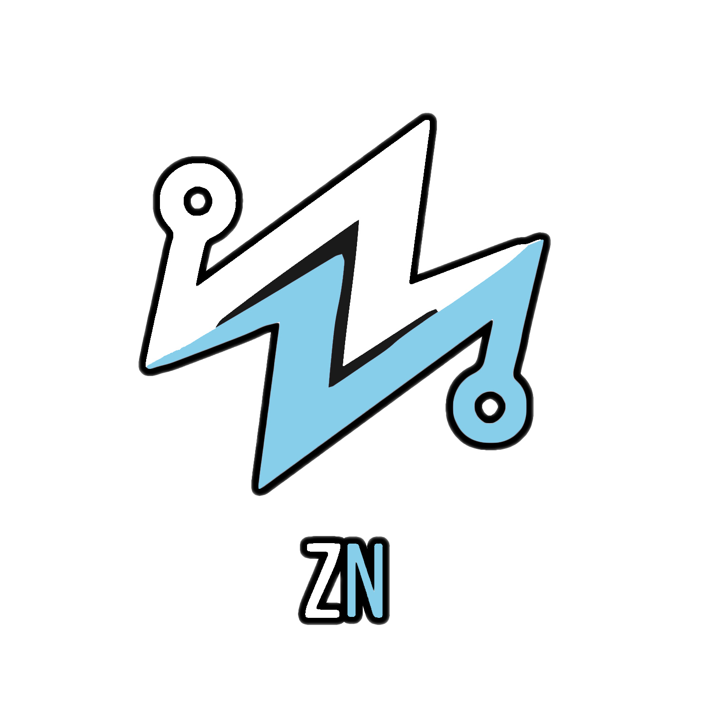

BSc in CSE
BRAC University

Zulkar NainComputer Science Engineer | Data Science & AI Enthusiast
Dhaka, Bangladesh
Computer Science Engineer exploring Data Science, AI, Computer Vision, and Healthcare Analytics.
I am interested in applying computational methods and machine learning to real-world problems, especially in healthcare and data-driven systems.
About Me
I am a Computer Science & Engineering graduate from BRAC University with interests in Data Science, Machine Learning, Computer Vision and Healthcare Analytics.
My academic and practical experience has involved building software systems, experimenting with machine learning models, working with computer vision techniques, and exploring how data-driven approaches can address real-world problems.
I am particularly interested in healthcare applications of AI and data science, with a specific focus on responsible and meaningful use of computational methods.
My professional background includes work as a Production Approval Analyst / Order Management professional, along with freelance experience on Fiverr and Upwork where I collaborated with international clients and delivered project-based work independently.
BRAC University
Recognized during undergraduate studies
Freelancing experience
Experience
IDL Bangladesh
My current work focuses on order management, production approval, operational coordination, and maintaining accuracy in business workflows. I value structured communication and reliable execution in collaborative environments.
CVIS Research Lab, BRAC University
Conducted deep analysis of structured medical image datasets from WHO and achieved 98% AUC in early cervical cancer detection using deep learning and machine learning approaches.
Fiverr • Upwork
I have worked with international clients on freelance projects, built software and web solutions, communicated directly with clients, and delivered work independently over several years. My Fiverr work has exceeded $10,000 over approximately four years.
Research & Academic Work
Enhancing VIA Screening for Cervical Cancer: A Comprehensive System Integrating Image Processing, Risk Factors, and Follow-up Facilitation
This research explored the application of computer vision and machine learning to Visual Inspection with Acetic Acid (VIA) screening, with emphasis on medical image analysis, risk-factor modeling, and decision-support workflows.
The study examined methods including VGG16, ResNet50, YOLO, and Random Forest to support healthcare analytics and improve the reliability of screening-oriented AI systems in clinical research contexts.
View ThesisVision Transformer • Explainable AI • Diabetic Retinopathy
Presented at ICECI 2026, IEEE; online copy pending.NLP • DistilBERT • Emotion Classification
Presented at ICBDAIA 2026; online copy pending.Multimodal Medical Imaging • Attention Mechanisms • Brain Tumor Analysis
Accepted with minor revision — PLOS OneDeep Learning • Medical Imaging • Cervical Cancer Screening
Accepted with minor revision — Scientific Reports (Nature)Using data science to understand healthcare-related problems and support thoughtful analysis.
Image understanding, object detection, and visual analysis for applied research problems.
Predictive modeling, classification, and feature analysis for structured and image-based data.
Applying statistical and computational methods to healthcare data with care and rigor.
Exploring responsible applications of AI in medical and healthcare contexts.
Developing interpretable and clinically relevant imaging systems for diagnostic support and healthcare AI applications.
Projects
Undergraduate thesis project using computer vision models and regression analysis to improve screening workflows in healthcare.
A healthcare-focused software project exploring technology-driven approaches to improving access to and management of healthcare-related information.
This project aims to detect at-risk PCOS patients to support better healthcare service and prioritization for assessment.
A project that serves an ONNX-optimized image classification model as a web service with FastAPI, Docker, and Kubernetes.
A peer-to-peer file sharing application built with Python to enable direct file transfer across devices on the same network.
A complete e-commerce platform from scratch using Python Flask, establishing a robust two-tier architecture for Admin and Customer roles.
Skills
Education
BRAC University
My education strengthened my interest in computing, applied analytics, machine learning, and data-driven problem solving. I also received recognition on the VC's List during undergraduate study.